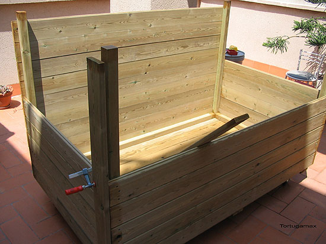
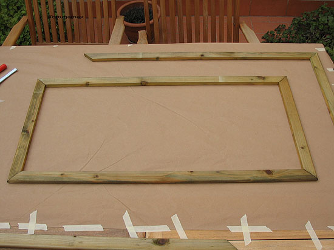

|
CONSTRUCCION DE TERRARIO-RECINTO EXTERIOR PARA TORTUGAS PEQUE�AS
M�ximo Rom�n, 2007
Aqu� hago una descripci�n paso a paso de
c�mo he construido un recinto exterior para tortugas. Pienso que es un
recinto ideal para aquellos que como yo, a�n no disponiendo de terreno
o campo al exterior, disponemos de alguna terraza o �tico y no nos
interesa hacer nada de obra y a la vez que queremos evitar que la
tortuga ande en contacto directo con el suelo por los males que esto
representa para su bienestar.
El recinto est� hecho en su totalidad con madera de pino de flandes.
La madera est� tratada con sales minerales en ba�o de autoclave, lo
que le a�ade una alta durabilidad en condiciones extremas a la
intemperie. Son listones machihembrados de un grosor de 22 Mm. Las
dimensiones totales del interior son de 1,70 m de largo por 1 m de
ancho.
Aqu� se puede ver un detalle de la base, que es el punto de partida
del montaje.

Una vez tenemos la base, se procede al montaje de los postes que hacen
de esquina y del resto de paredes del recinto.
En la base se han colocado ruedas que aguantan peso de verdad, estas
en concreto pueden soportar 100 Kg. cada una y hay 5 (una en cada esquina y
una en el centro)

Para todo el ensamblaje se han usado tornillos inoxidables y pegamento
de contacto como el de la foto.
Para hacerlo accesible y pr�ctico a la vez, hice que los cerramientos
frontales, laterales y superiores, fueran desmontables, por
lo que proced� a hacer marcos cerrados en su contorno con malla
met�lica.

Con la ayuda de una grapadora se ha cosido malla met�lica en los
marcos.
En la base del recinto se han practicado unos agujeros a modo de
desag�e y se ha colocado malla fina para que las bolas de arlita que pondremos a continuaci�n no se cuelen en los agujeros y
los obstruyan.
La arlita son bolas de arcilla de venta en tiendas de jardiner�a, que
nos van a servir para crear una capa de material drenante en el fondo
del recinto.

Despu�s de llenar con unos 10 cm aproximadamente de altura de arlita,
se procede a rellenar con el sustrato adecuando dependiendo de la
especie de tortugas que se quieran alojar en el futuro.
Para evitar peso innecesario, se ha rellenado parte del fondo con
garrafas de agua vacias y (opcional) se ha colocado una tela
plastificada permeable que me permite evitar que el sustrato se mezcle
con la arlita. Esta tela no es del todo necesaria, pero lo he creido
conveniente para evitar que el sustrato y la arlita se mezclen, y as�
facilite la limpieza completa del recinto cuando sea oportuno.
Est� provisto de un pl�stico para en caso de anuncio de lluvias
fuertes se pueda tapar de manera excepcional e incluso para posibles
heladas.
Aqu� se puede ver un detalle de la accesibilidad. En pocos segundos
todo el recinto queda accesible para su limpieza/mantenimiento.
Y aqu� ya terminado:
Aqu� se pueden ver detalles del interior del recinto ya habilitado
para alojar a las tortugas:
Espero que os haya gustado.
|